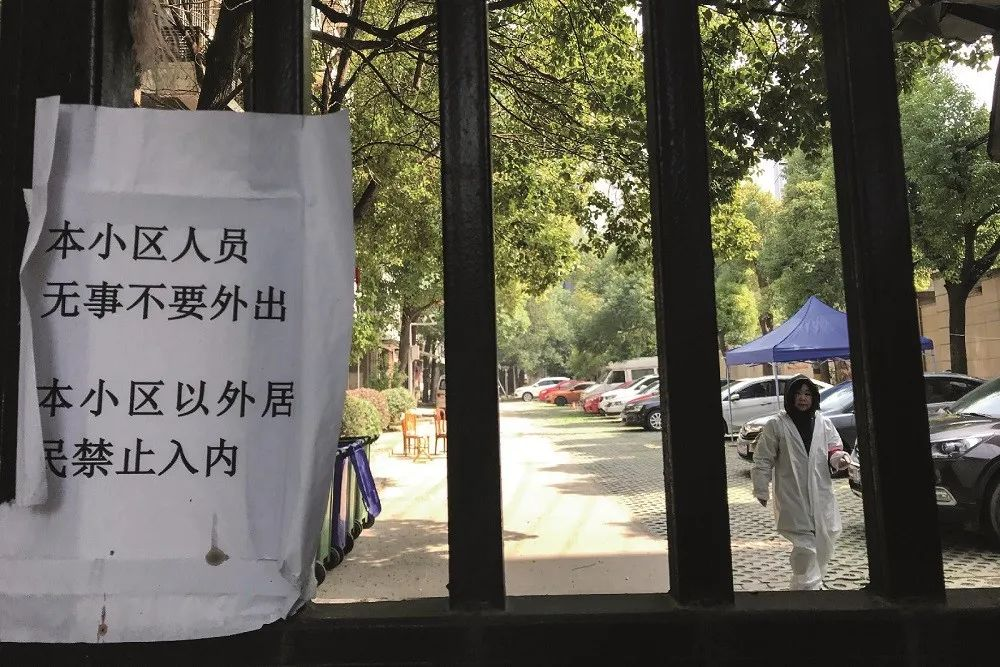

疫情全球大流行难以避免，中国严阵以待输入性新风险
原文链接 备份链接 从趋势上看，新冠肺炎全球大流行可能无法避免，中国需一边打好国内阻击战，一边应对全球疫情带来的新风险。 文 | 信娜 朱贺 编辑 | 王小 空格 鉴于中国境外受新型冠状病毒疫情影响的国家和病例数量持续增加，2月28日，世 …

形式主义的危害性在本次疫情防控中充分暴露出来，中央提出的“分类指导、分区施策”的方针，不仅对解决本次疫情防控具有重要的指导意义，而且对解决常态下的形式主义也有重要意义

编者按
居民隔窗向中央指导组举报,揭露了全民“抗疫”中一些地方的形式主义和官僚主义。
新华社报道，3月5日上午有关中央指导组在武汉市青山区翠园社区开元公馆小区考察，有居民从家里的窗户向指导组喊话：“假的，假的！”“形式主义！”针对群众现场反映的困难和问题，孙春兰立即要求省、市领导深入调查，不回避矛盾，杜绝形式主义、官僚主义。
的确，在这次全民抗议中，涌现出众多党员干部、医务工作者、志愿者，他们选择“逆行”，走向抗击疫情的第一线，成为真正的战“疫”英雄。但是，有部分地方在疫情防控中也暴露出一定的形式主义、官僚主义、粗暴主义等问题，严重影响国家疫情防控大局。
有的地方粗暴断路、对企业复工采取“一刀切”的禁止；有的地方以文件落实文件,口号喊得震天响、行动起来轻飘飘；有的地方把帮助民众防疫搞成了精准填表，用纸面数字摸底排查；有的地方一点小事也要层层请示汇报，看似规范实则不愿担当。
因此，我们要警惕本次疫情防控中暴露的形式主义危害性。杜绝疫情防控中的形式主义、官僚主义,事关疫情防控阻击战的决胜战局。中央提出“分类指导、分区施策”的方针，不仅对解决本次疫情防控具有重要的指导意义，而且对解决中国一段时间以来常态下的形式主义也有重要意义。如果说抗击新冠病毒是一场“歼灭战”，那么抗击形式主义病毒则是一场“持久战”。
文 | 刘杰
习近平总书记高度重视疫情防控中暴露出的形式主义问题，2月3日提出，“要坚决反对形式主义、官僚主义，让基层干部把更多精力投入到疫情防控第一线。”部分地方在新冠肺炎疫情防控中暴露出的一些形式主义问题，一定程度影响了国家疫情防控大局。
一是应急措施的“一刀切”主义。也叫机械主义，生搬硬套、急功近利，并常演化为“粗暴主义”。危机处置最有效的手段是危机切割，在传染病防控中更是如此。自中央决定武汉封城以后，多地粗暴地采取断路、封锁等简单的拒绝方式，而不是采取收容的方式，让大量流向外地的武汉人和有接触史的人无处安身，既缺少基本的人文关怀，也加剧了疫情传染风险。
部分地方简单采取“一封了之”“一关了之”的防控措施，导致应急物资生产企业招不到工、进不了原材料，严重影响疫情防控的物资保障，甚至部分地方生活物资供应也得不到保障，影响社会稳定。“一刀切”主义的背后是懒政、惰政，不是以“方便群众”为出发点，而是以“方便自己管理”为出发点，以自己如何“省事、省心、省力”为原则。对于常态下“一刀切”导致的各类社会冲突与矛盾“一压了之”，相关舆情采取“一删了之”“一封了之”。而在疫情或危机状态，“一刀切”演变成的简单粗暴，直接加大了疫情传播的风险和危机冲击。
二是应急组织的松散主义。面对疫情，重点疫区政府没能第一时间成立结构合理的疫情防控指挥体系，统一领导和指挥疫情防控工作。存在综合协调不力、组织机构不精干、指挥链条过长、中间环节过多，不能实现靠前指挥、一线调度和无缝对接等问题，导致应急响应初期疫情防控效率低下，顾此失彼。例如，疫情重灾区的防疫物资调拨和分配不畅，特别是社会参与协调功能瘫痪，社会参与无序，甚至社会捐赠分配混乱，不仅影响疫情防控，而且加剧社会焦虑。
三是指挥程序的多头主义。多头指挥让基层工作人员无所适从，数据多头报送，效果多头督查，降低了防控疫情的工作效率。各级政府几十个部门指导抗疫的文件和表格都涌向基层，形成发文抗“疫”和填表抗“疫”之势。忙于填写这些大多雷同的“文件”与“表格”，使得基层单位不堪重负，没有更多精力倾听、回应群众诉求。
四是指挥手段的面对面主义。信息化手段运用不足，把会议作为应急指挥中传达精神、部署工作的主要手段，以会议贯彻会议，层层开会，会议抗“疫”。指挥人员不在现场在会场，慷慨激昂念稿子，长篇大论读文件，虚对虚地谈方案，浪费一线工作与战斗人员大量的时间与精力。疫情防控指挥的信息化手段运用不足，部分地方没能较好运用大数据准确识别和隔离危险人群，导致疫情在一定范围内扩散，给防疫造成重大挑战。
五是危机沟通的本本主义。突发事件当中，公众关切多，各类传言、流言也比较多，需要政府快速有效沟通。但通常的情况是“当真理还在穿鞋的时候，谣言已经光着脚跑出去了”。一方面，突发事件中，特别是公共卫生事件中，需要公众知情、表达、参与和监督，但部分地方平时透明度低，公众关切点、信息盲点多，易形成突发事件信息公开“堰塞湖”，地方领导干部不易在危机沟通前找到公众的核心关切，经常准备不足，仓促上阵。另一方面，部分地方领导干部善于常态下的仪式主义，养成了照本宣科的习惯，不能在危机状态下有效沟通，面对媒体，不能从有关灾情信息、个人表情与姿态上给公众传递信息和信心，降低了公众对地方政府和领导干部的信任与信心。
这些形式主义，有老问题，也有新表现，其实“看似新表现，实则老问题”。常态下的形式主义导致干部管理能力弱化，直接导致应急无能主义，不能充分利用本地资源进行危机预防、初期响应，在响应升级后，也没能力有序接受国家力量支援和社会力量参与。
习近平总书记在2月12日又提出，“要求各级党委和政府要按照党中央决策部署，突出重点、统筹兼顾，分类指导、分区施策，切实把各项工作抓实、抓细、抓落地，坚决打赢疫情防控的人民战争、总体战、阻击战，努力实现今年经济社会发展目标任务”。分类指导、分区施策为解决当前疫情防控中的形式主义，并为破解一段时间以来我国存在的形式主义顽疾提供了指导。
当前的疫情防控工作既有提高收治率、治愈率、降低病亡率的应急处置重点，也有加大诊疗方案、药物和疫苗科研攻关力度的应急支援重点；既有加强社区防控、返程人员的健康监测、切断疾病传播途径、降低感染率的应急防范重点，还有医疗防护物资供应的应急保障重点，此外还要做好群众生活必需品生产供应工作。在抓好疫情防控的同时，也要认识到，经济工作仍是基础，不能错过当前的春耕备耕关键时节，更不能让大量中小企业倒闭，造成通货膨胀、失业、经济增长和国际收支失衡等严重宏观经济问题。为防止疫情防控中的形式主义，需要进行分类指导，防止疫情防控中的“一刀切”主义。分类指导不是分类指令，更不是分类计划，而是通过调动各方面积极性，从自身部门和行业的实际情况出发，制定政策、方案和措施，解决疫情防控中各部门、各行业的唯上主义。
当前的疫情发展态势，既有重疫区，也有轻疫区；既有劳动力输出区，也有劳动力接收区。为防止疫情防控中的唯上主义、“一刀切”主义等形式主义，中央明确要求“以县域为单元，确定不同县域风险等级，分区分级制定差异化防控策略”。各级党委和政府要实事求是做好防控工作，对偏颇和极端做法要及时纠正，不搞简单化的一关了之、一停了之，尽可能减少疫情防控对群众生产生活的影响。
形式主义的危害性在本次疫情防控中充分暴露出来，中央提出的“分类指导、分区施策”的方针，不仅对解决本次疫情防控具有重要的指导意义，而且对解决我国一段时间以来常态下的形式主义也有重要意义。精准扶贫中的“数字脱贫”、“美丽乡村”建设中的同质化、治理畜禽养殖污染的极端化、不同类型高校学术考评机制的单一化等都是形式主义的不同表现，这些形式主义的根源就是不能“实事求是”，偏离了“分类指导、分区施策”的轨道。形式主义是我们党的大敌、人民的大敌。如果说抗击新冠病毒是一场“歼灭战”，那么抗击形式主义病毒则是一场“持久战”。
（作者为中共中央党校（国家行政学院）博士后；编辑：王延春）
（本文首刊于2020年3月2日出版的《财经》杂志）


▲点击图片查看更多疫情报道
责编 | 黄端 duanhuang@caijing.com.cn
本文为《财经》杂志原创文章，未经授权不得转载或建立镜像。如需转载，请在文末留言申请并获取授权。
原文链接 备份链接 从趋势上看，新冠肺炎全球大流行可能无法避免，中国需一边打好国内阻击战，一边应对全球疫情带来的新风险。 文 | 信娜 朱贺 编辑 | 王小 空格 鉴于中国境外受新型冠状病毒疫情影响的国家和病例数量持续增加，2月28日，世 …
原文链接 备份链接 联合调查组认为，“黄某英事件”虽然发生在武汉女子监狱，但根源在湖北省司法厅和湖北省监狱局 《财经》综合报道 仅用5天时间，感染新冠肺炎的刑满释放人员黄某英，如何在层层封锁之下从武汉回到北京？3月2日，司法部牵头，会同中 …
原文链接 备份链接 防疫压力层层传导，但各区域、 部门之间缺乏互通互认的信息共享机制超长春节假期终于结束，上班族等来了复工通知。 数据显示，2月14日至2月22日，全国累计发送旅客1.17亿人次，每日客流量均实现环比增长。但在返程速度逐渐 …
原文链接 备份链接 澎湃新闻记者 林平 2月26日上午，国务院应对新型冠状病毒感染肺炎疫情联防联控机制举行新闻发布会，介绍《关于政法机关依法保障疫情防控期间复工复产的意见》有关情况。 近期监狱病例激增所致，疫情如何在监狱传播？目前治疗情况 …
原文链接 备份链接 “ - 疫 情 之 下 - 疫情没有结束，我们的工作仍在继续。在这场“战疫”中，我们的付出终有所获，经营户对我们的理解，人民群众对我们的信任，鼓舞着我们在疫情蔓延的环境下不断向前。 ” 我的朋友是一名市场监督管理所的 …